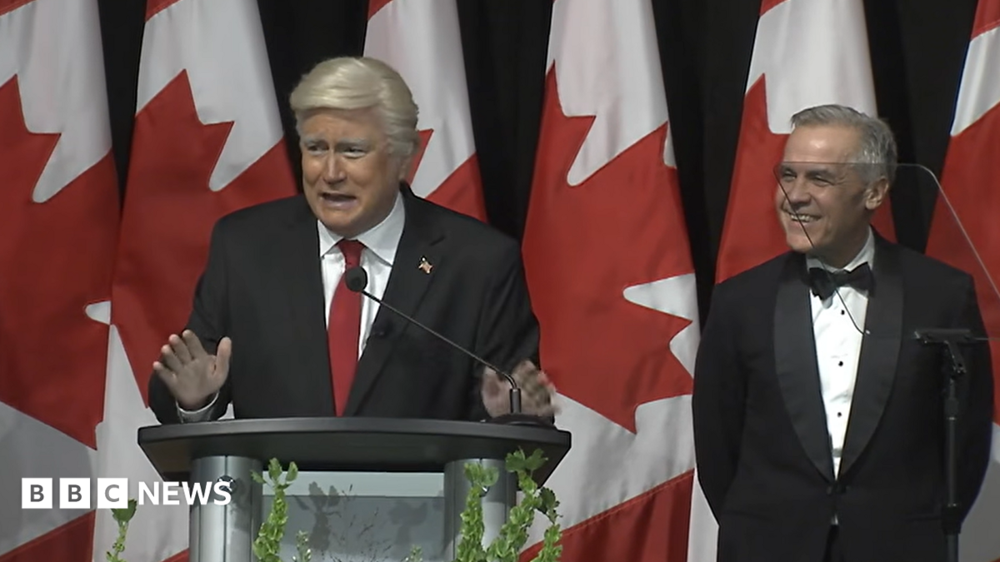

World · 24 Nov 2026
Comedian impersonates Trump's dance moves, mocks trade talks at Canada press dinner

The impersonator, Canadian comedian Mark Critch, poked fun at the US president's search for a new press secretary and US-Canada trade talks.
Multiple independent publishers are reporting on the same development: Comedian impersonates Trump's dance moves, mocks trade talks at Canada press dinner.
The available reports place the development in the World category. The accounts were compared for agreement on the central event rather than simply shared names or broad topics.
One of the available reports describes the development this way: The impersonator, Canadian comedian Mark Critch, poked fun at the US president's search for a new press secretary and US-Canada trade talks.
Readers should consult the linked source reports for additional context, updates and details that may change as the story develops.
Sources
This article was produced by the C. O. Eric AI Newsroom from the cited sources. It is published only after automated evidence and safety checks.